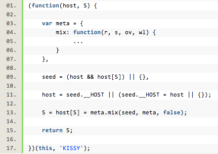
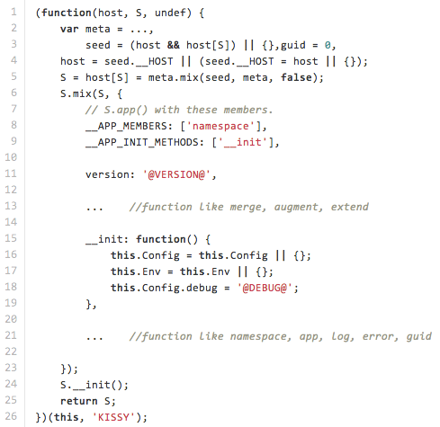
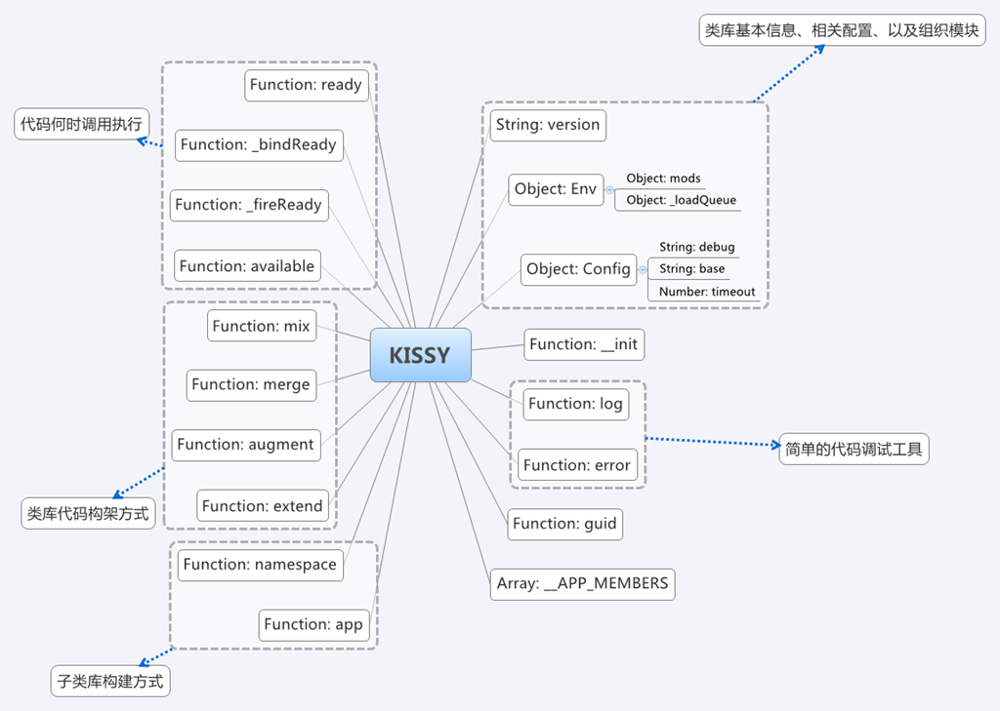

你的浏览器不支持 impress.js, 所以当前展示的是简化版。
为了获得更好的体验，请使用最新的 Chrome, Safari 或者 Firefox 浏览器。
项目地址：https://github.com/kissyteam/kissy
分支：
(function(host, S, undef) {
...
return S;
})(this, 'KISSY');
(function(host, S, undef) {
...
return S;
})(this, 'KISSY');
var meta = {
mix: function(r, s, ov, wl) {
if (!s || !r) return r;
if (ov === undef) ov = true;
var i, p, len;
if (wl && (len = wl.length)) {
for (i = 0; i < len; i++) {
p = wl[i];
if (p in s) {
_mix(p, r, s, ov);
}
}
} else {
for (p in s) {
_mix(p, r, s, ov);
}
}
return r;
}
},
_mix = function(p, r, s, ov) {
if (ov || !(p in r)) {
r[p] = s[p];
}
}
javascript &&和||运算法的使用技巧
&&和||在 js库或框架的源代码中（例如JQuery）使用广泛：
&& 优先级高于 || ｛资料来源：MSDN，MOZILLA 开发者网络｝
1. a() && b() :如果执行a()后返回true，则执行b()并返回b的值；如果执行a()后返回false，则整个表达式返回a()的值，b()不执行；
2. a() || b() :如果执行a()后返回true，则整个表达式返回a()的值，b()不执行；如果执行a()后返回false，则执行b()并返回b()的值；
代码如下:
alert((1 && 3 || 0) && 4); //结果4 ①
alert(1 && 3 || 0 && 4); //结果3 ②
alert(0 && 3 || 1 && 4); //结果4 ③
分析：
语句①：1&&3 返回3 => 3 || 0 返回 3 => 3&&4 返回 4
语句②：先执行1&&3 返回3，在执行0&&4返回0，最后执行结果比较 3||0 返回 3
语句③：先执行0&&3 返回0，在执行1&&4返回4，最后执行结果比较 0||4 返回 4
注：非0的整数都为true，undefined、null和空字符串"" 为false。
常见的复杂js应用的构建方式：
舍弃“继承”这种方式不谈，系统构建还有其它的什么方法吗？
kissy提供了另外一种可能性，即mix()，混合。在kissy系统的核心部分，为一个系统提出了三个概念：
kissy约定，一个系统诞生自一个种子，该种子通过不停地mix()而成长，变成一个复杂的系统。由种子培育成为系统的整个环境，只需要能够理解mix与host，即可以基于seed来构建任意复杂的系统。
上述的逻辑在kissy.js中，描述得相当简单：

这个系统初始化的时候，传入host与host中的系统名S。对于kissy来说，host是当前的系统环境，这里的this值，可以是javascript引擎的global，或浏览器环境的window，或某个函数或对象闭包内的当前this。而'KISSY'值，表现kissy系统在环境中的名字。按照javascript的语言约定，我们可以通过host[S]来找到既已经存在的kissy系统。 按照此前的约定，一个mix构建的系统，必然有host和mix两个性质，因为它最原始的种子(seed)就必然包括这两种性质。所以，既然我们上面是通过host[S]来访问一个“既已存在的kissy系统”，则无论该kissy系统经过了何种程度的演化，必然会包括这两种性质。
上面的构建过程尝试寻找在host[S]中寻找这两种性质，如果其中之一不存在，则尝试初始化它。例如代码：
seed = (host && host[S]) || {}，
如果host[S]是存的，则假设它是一个seed，否则初始化为一个空的对象。接下来：
host = seed.__HOST || (seed.__HOST = host || {}) ;
如果上述的种子seed有host属性，则使用它既有的__HOST，如果没有，则置为当前环境下的host，或一个空的对象。现在我们看到的seed，必然已经具有host属性。但是，它还“可能”缺少一个性质，即最最重要的mix()。mix()的作用其实很简单，就是从对象B将属性抄写到对象A的一个方法。而这里，之所以说是“可能”缺少，是因为如果seed是既有的mix系统，则他已经有mix()属性；如果它是第三方系统，则可能没有mix，或有一个不同的mix等等。下面的一行代码尝试用元语言的思想构建它，即：
meta.mix(seed, meta, false); // false值表明不覆盖
元语言的特点是自描述的，meta.mix()可以向seed混入mix()，也可以使seed.mix()能混入其它系统或meta本身。总之在mix()的构建中，meta只需要有mix这个方法，不需要更多，也不能更少。
上一行代码的结果，是：如果seed没有自已的mix()属性，则向seed混入meta的原始的mix()。
现在，我们再看seed，必然已经具有了host和mix()属性。它本身可能是一个空对象，也可能是一个庞大的既有系统，但无论如此，它具有了这两个性质，就可以作为seed进一步的衍生。
在这一切之前，下面的代码保证它位于HOST[S]，并返回这个系统：
S = host[S] = meta.mix(seed, meta, false);
return S;

我们再整体看下kissy.js里面的代码组织，首先我们有了一个全局的接口对象S，然后我们有一个mix方法，现在我们便可以很方便地将各种属性、方法mix到S上面。那现在我们需要往KISSY这个对象上mix哪些东西呢？首先最基本的，版本信息，类库的配置信息（主要是是否开启debug模式，以及load加载相关参数），还有一个最重要的是类库的模块存储。既然我们这前说过KISSY代码最基本的组织方式是以模块方式结合，比如有DOM模块，Event模块，Node模块等系统提供的模块，还有一些用户自定义添加的模板，那么他们都需要存储，那存储到哪里比较合适呢？很自然的想法就是在KISSY对象上开辟一个对象来存储他们，这里便是Env对象的作用，(里面的mods存放了各种添加的模块，而_loadQueue则用于load机制的控制。)有关模块的设计理念，组织和加载等，我们在后续讲到KISSY的load机制时再详细介绍。
mix()系统构建中的其它概念
kissy除了实现基本的mix系统之外，在core部分加入了除mix()之外的两种混入方法：
- augment，扩充。用mix方法，将另一些子系统s[i]的原型，混入目标子系统r的原型。
- merge，合并。用mix方法，将另一些子系统s[i]，混入当前子系统S。
基本上来说，augment是通过mix来对javascript的原型系统进行扩充的方法，或是在应用系统中，结合原型机制与混入机制来构建系统。而merge只是mix方法的一个批量工具。
另外，考虑到面向对象系统中的继承特性，kissy也实现了extend(派生)方法，以提供传统的面向对象编程能力。
除了语言级别的概念之外，kissy也提供系统框架级别的一些构建能力。包括：
- app，应用。与host[S]并列的，具有同等能力的其它应用，app('XXX', ...)可以在host['XXX']上组织应用。
- namespace，命名空间。即可以组织出host[XXX].YYY.ZZZ这样的，在不同子系统中的，不同命名空间下的系统。
最后，kissy在内核中也提供简单的调试支持（ S.log(),S.error() ）。
显然的，基于mix的原则，任何一个第三方的系统可以通过混入kissy来修改上述的概念，例如覆盖extend()来实现自己的对象系统构建原则，或覆盖app()来实现自己的应用组织原则。第三方系统也可以将kissy混入自身，在保障自身特性的情况下，使用kissy，以及更大规模的kissy ui系统带来的好处。
